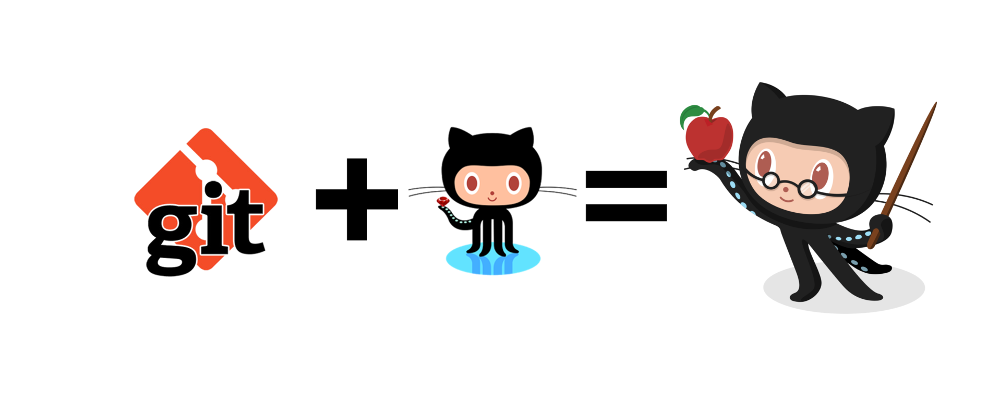
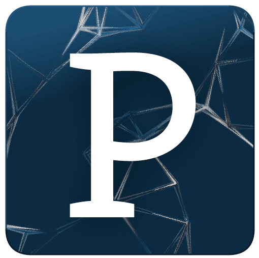
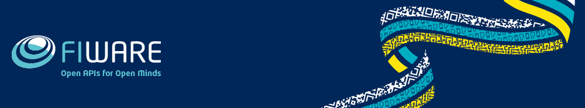
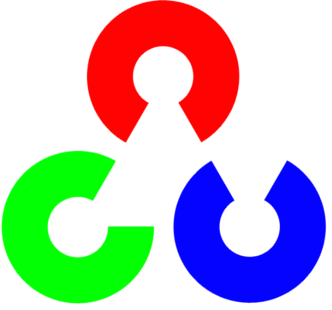

Python en la Biotecnología

Realizar una introducción al lenguaje, y después aplicaciones del mismo a la bioinformática. Se propone realizar el taller en Bioinformática, enfocado a estudiantes de Ciencias de la Salud y Biología, y después pensar cómo reducir el componente biotecnólogo para adaptarlo a los estudiantes de Informática.
Git + GitHub en la USAL
Utilización de git tanto para control de versiones propio como en equipos utilizando GitHub para el alojamiento. Enfocado al desarrollo de las prácticas de la carrera
SAC 2015
SAC 2015Texto descripcion del Curso.
Processing
http://natureofcode.com/ How can we capture the unpredictable evolutionary and emergent properties of nature in software? How can understanding the mathematical principles behind our physical world help us to create digital worlds? This book focuses on the programming strategies and techniques behind computer simulations of natural systems using Processing.
Robótica
RobóticaCerrar el curso con una actividad del SIGROB, aún por definir. Daniel López tiene un par de ideas, pero aún hay que pulirlo
FIWARE
FIWARE es una plataforma basada en la nube para la creación y distribución de servicios y aplicaciones innovadoras a coste reducido. La idea es traer a gente de la propia FIWARE para hablar del proyecto, invitando a estudiantes y profesionales (incluyendo empresas como ponentes).
Unity
Introducción a la plataforma, a fin de dar pie al taller de Cardboard. Diseño de una escena sencilla, uso del entorno...
Cardboard
Utilización de Google Cardboard para realidad aumentada rudimentaria
RNA
RNATexto descripcion del Curso.
OPENCV
Texto descripcion del Curso.